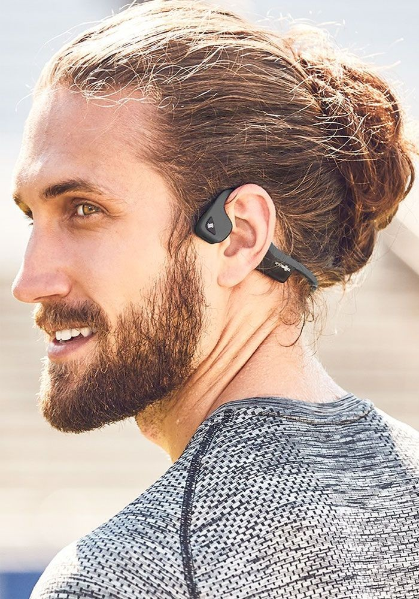
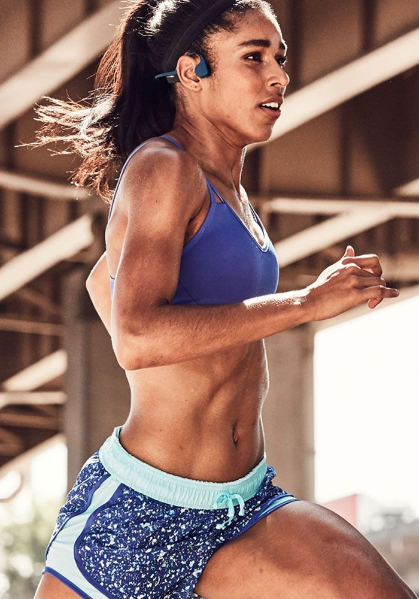
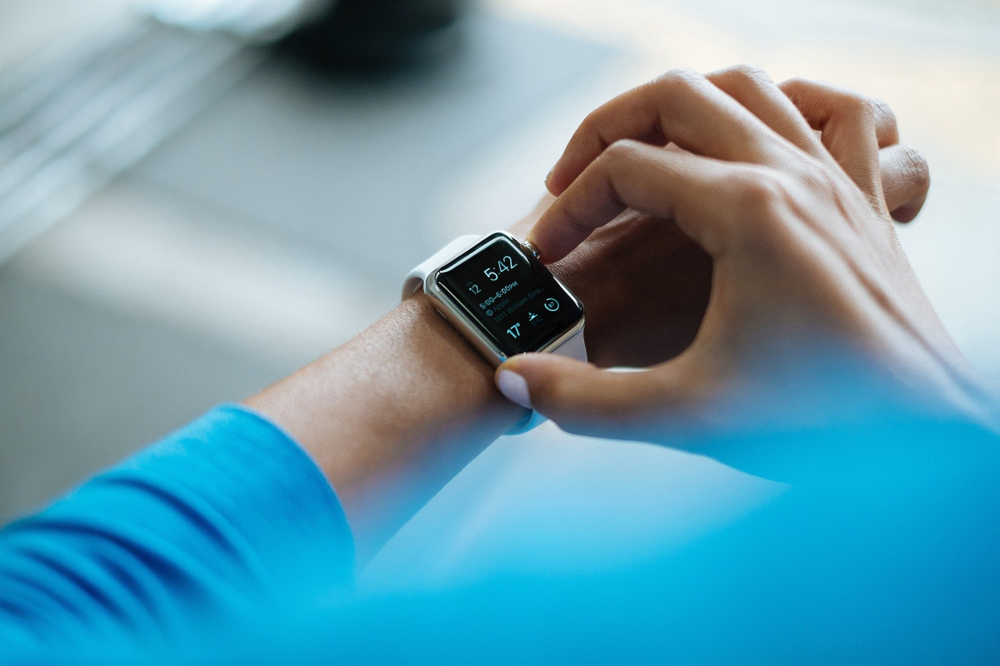

Montres connéctées
Peu importe l'heure, seule compte la magie de l'instant.
Peu importe l'heure, seule compte la magie de l'instant.
Style et performance
250€
Une garantie de 2 ans pièces et main d’oeuvre. La livraison rapide entre 24h et 48h vous permet de profiter au plus vite de nos produits.
Profitez pleinement de vos sorties sportives avec la montre Run’Zik S Plus. Grâce à ses nombreuses fonctionnalités et ses performances ce modèle haut de gamme répond à tous vos besoins sportifs et extra-sportifs ! Ce modèle pour poignet fin reprend l'ADN de la montre Run’Zik S en y ajoutant de nombreuses évolutions. Cette montre vous suit dans toutes vos activités sportives : course à pied, vélo, natation. Compacte et légère, elle sait se faire oublier sur votre poignet tout en vous donnant accès à des fonctionnalités incroyables !
Profitez pleinement de vos sorties sportives avec la montre Run’Zik S Plus. Grâce à ses nombreuses fonctionnalités et ses performances ce modèle haut de gamme répond à tous vos besoins sportifs et extra-sportifs ! Ce modèle pour poignet fin reprend l'ADN de la montre Run’Zik S en y ajoutant de nombreuses évolutions. Cette montre vous suit dans toutes vos activités sportives : course à pied, vélo, natation. Compacte et légère, elle sait se faire oublier sur votre poignet tout en vous donnant accès à des fonctionnalités incroyables !
Écoutez votre musique préférée en courant avec un casque Bluetooth (non fourni) et la montre Run’Zik S Plus. Sa mémoire interne vous permet de stocker jusqu'à 500 morceaux de musique !Autre amélioration notable, ce modèle intègre la solution de paiement sans contact Pay Plug, vous permettant de payer directement avec votre montre et sans avoir besoin d’emporter avec vous de la monnaie ou cartes de crédit. Le système de cartographie TopoActive Europe préchargée dans la Run’Zik S Plus fournit des données cartographiques optimisées et un suivi de localisation de qualité supérieure. Pour les coureurs et cyclistes aventuriers, la fonction Trendling Popularity Routing compile des milliers de données Garmin Connect pour vous aider à trouver et à suivre les meilleurs sentiers et itinéraires lors de vos entraînements.
En couplant votre montre via Run’Zik Connect, vous gardez toujours un lien avec vos proches grâce à sa fonction GroupTrack. Le LiveTrack permet à vos amis de vous suivre en temps réel durant vos sorties ou courses. Les fonctions Navigation Intuitive et Around me, allouent des indications plus pointus lors de vos déplacements tout en rendant plus intuitive l'utilisation de la cartographie. Le cardio-poignet Run’Zik vous permet de moduler l'intensité de votre entraînement en fonction de votre rythme cardiaque. La montre Run’Zik S Plus ne laisse rien au hasard en terme d'analyse d'activité sportive. Vous disposez en un coup d’œil des informations nécessaire à votre progression : statut d'entraînement, estimation de la VO2 max, charge d'entraînement et aide à la récupération. La combinaison des systèmes GPS, Glonass et Galiléo permet un suivi encore plus précis et rapide pendant vos activités sportives. Son altimètre, baromètre et thermomètre offrent un accès rapide à l'altitude et aux conditions météorologiques. Cette montre haut de gamme est dotée d'un boîtier arrière en acier forgé et d'un verre saphir encore plus résistant aux rayures ce qui lui confère une robustesse extrême en milieu hostile. Son écran couleur haute résolution dispose de la technologie Transflective pour optimiser la lisibilité de son cadran.
Style et performance
250€
AcheterUne garantie de 2 ans pièces et main d’oeuvre. La livraison rapide entre 24h et 48h vous permet de profiter au plus vite de nos produits.
Style et performance
250€
AcheterUne garantie de 2 ans pièces et main d’oeuvre. La livraison rapide entre 24h et 48h vous permet de profiter au plus vite de nos produits.